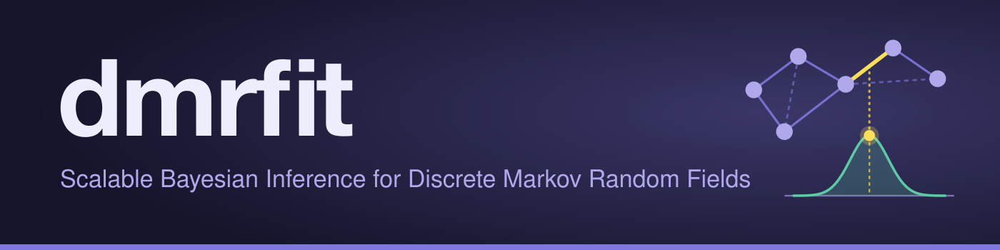

dmrfit estimates discrete Markov Random Fields, both Ising models (Ising, 1925) and Ordinal Markov Random Fields (Marsman et al., 2025), through the pseudolikelihood. It offers a frequentist route, with point estimates from a trust region algorithm and robust standard errors, and a Bayesian route, in which the pseudo-posterior is corrected with coordinate rescaling (CoRe; Arena and Marsman, 2026). Point estimation supports both full network estimation, where all edges are included, and constrained network estimation, where only a specified subset of edges is considered.
Main functionalities
dmrfit(): point estimation and Bayes factors - Maximum pseudolikelihood estimation, or maximum a posteriori estimation with with_prior = TRUE (Beta-Prime prior on the thresholds, Cauchy prior on the pairwise interactions), through a trust region algorithm (Fletcher, 1987; Nocedal and Wright, 1999). - Robust standard errors from the Huber-White sandwich estimator. - Constrained estimation with structure, a P x P adjacency matrix of the edges to include. - Savage-Dickey Bayes factors for each pairwise interaction with savage_dickey = TRUE, computed by sampling importance resampling from the coordinate-rescaled pseudo-posterior (Skare et al., 2003). - Gradient, Hessian and pseudolikelihood evaluations parallelized over ncores.
dmrfit_bayes(): posterior sampling - Draws from the coordinate-rescaled pseudo-posterior with an adaptive Fisher-preconditioned MALA sampler (Arena and Marsman, 2026), which corrects the underestimated posterior variability of the pseudolikelihood. - Posterior summaries (means, standard deviations, 95% credible intervals) and Savage-Dickey Bayes factors for each pairwise interaction, computed from the posterior draws.
Both functions return objects with print() and summary() methods.
Installation
Install the development version from GitHub:
remotes::install_github("jupepis/dmrfit") # install package via remotes
library(dmrfit) # load the packageExample
library(dmrfit)
# RADS-2 responses of 917 adolescents (25 items, 4 ordered categories). Here the 7 dysphoria items
data(rads2)
dysphoria <- names(which(attr(rads2, "clusters") == "Dysphoria"))
# Point estimates, sandwich standard errors and Savage-Dickey Bayes factors
fit <- dmrfit(rads2[, dysphoria], with_prior = TRUE, savage_dickey = TRUE)
summary(fit)
# Posterior sampling from the coordinate-rescaled pseudo-posterior
fit_bayes <- dmrfit_bayes(rads2[, dysphoria], nsim = 5000, burnin = 1000)
summary(fit_bayes)The example uses rads2, data from Ramos-Vera et al. (2023) distributed under the CC BY 4.0 license (see ?rads2).
Any issues with the package?
Should you encounter errors while using the package, or for reporting any kind of malfunction of the package, you can open an issue in here.
When opening an issue, please, use a descriptive title that clearly states the issue, be as thorough as possible when describing the issue, provide code snippets that can reproduce the issue.
References
- Arena, G. and Marsman, M. (2026). Bayesian inference for discrete Markov random fields through coordinate rescaling. Manuscript under revision.
- Ising, E. (1925). Beitrag zur theorie des ferromagnetismus. Zeitschrift für Physik, 31(1):253–258.
- Fletcher, R. (1987). Practical Methods of Optimization. 2nd ed. Chichester: Wiley.
- Nocedal, J. and Wright, S.J. (1999). Numerical Optimization. New York: Springer.
- Marsman, M., van den Bergh, D., and Haslbeck, J. M. B. (2025). Bayesian analysis of the ordinal Markov random field. Psychometrika, 90:146–182.
- Ramos-Vera, C., Quispe Callo, G., Basauri Delgado, M., Vallejos Saldarriaga, J., and Saintila, J. (2023). Factorial and network structure of the Reynolds Adolescent Depression Scale (RADS-2) in Peruvian adolescents. PLOS ONE, 18(5):e0286081.
- Skare, Ø., Bølviken, E., and Holden, L. (2003). Improved sampling-importance resampling and reduced bias importance sampling. Scandinavian Journal of Statistics, 30(4):719–737.